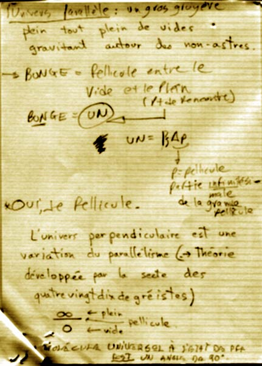

Livre du Tout
IX -
Un
ivers Parallèle
U
nivers parallèle: Un gros gruyère plein tous plein de vides gravitant autour des non-astres.
B
un
ge = Pellicule entre le vide et le plein (point de rencontre)
B
un
ge =
UN
UN = 1}
D
P
P= Pellicule
Partie infinitésimale de la grande pellicule
*
OUI
Je pellicule
L'
un
ivers perpendiculaire est une variation du parallélisme
(Théorie développée par la scte des quatrevingtdixdegréistes)
µ
Plein
— Pellicule
0 Vide
La Molécule
Un
iverselle à l'état de PFF
EST
un angle de 90°